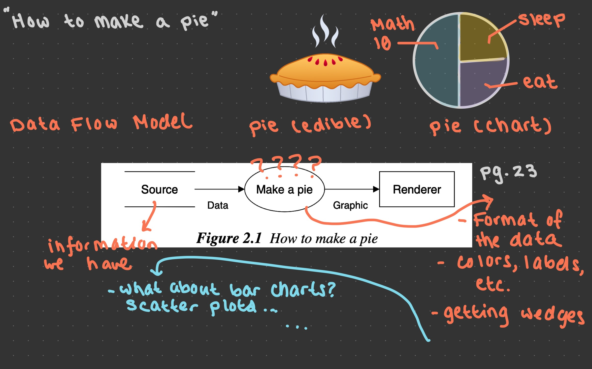
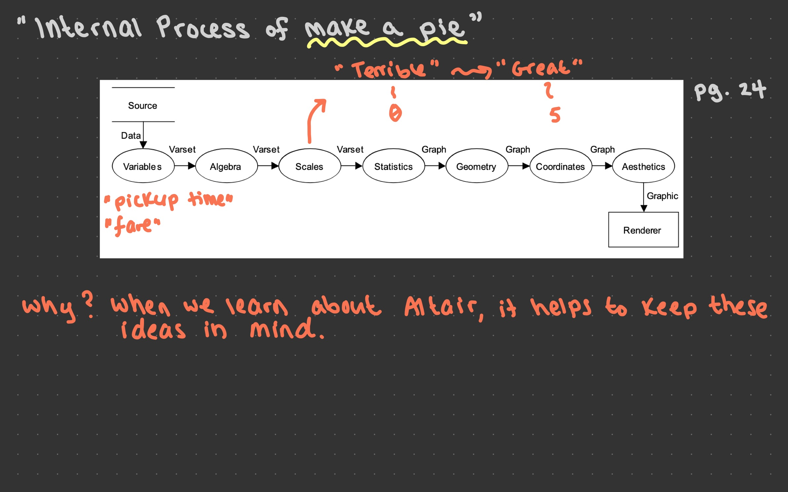
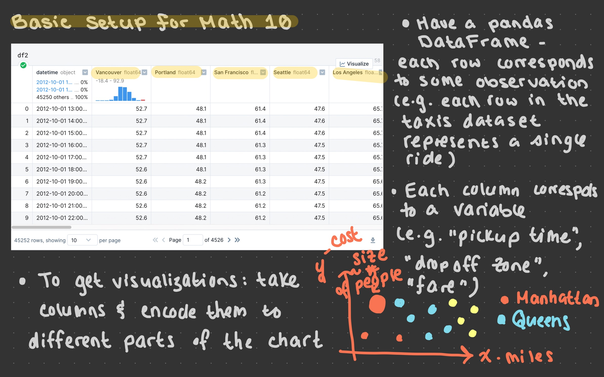

Lecture 5: August 16th, 2023#
Reminders:
Quizzes for 6 different EDA outcomes have been posted. I’ll show you on Canvas how to check your progress.
Remember: You only need to get credit for an outcome once. For example, if you pass P1 this week, you do not need to take it again for the rest of the class.
We will see quizzes for the remaining 4 EDA outcomes next week. I will also give new attempts for the quizzes you try this week.
Homework 1 and Homework 2 are due tonight at midnight. Homework 3 and Homework 4 will be posted tonight. (Homework 3 is already in Deepnote, and if we have some time at the end of lecture today we’ll work on it; or you could use the time to finish the homework due tonight.)
Office hours yesterday were lots of fun! As a reminder, Anthony has office hours tomorrow from 2:00pm-4:00pm.
For those of you who watch videos instead of attending live lecture: the videos for today are recorded and uploaded, I just haven’t posted them in the notes yet. This will be done after lecture today.
Today:
Start EDA Unit 3! This is all about plotting for Data Science.
We still have a little bit of material left over from EDA Unit 2. I have asked Anthony to go over the remaining material in discussion today. Be sure to attend! (I also have the notes for this material posted in Lecture 4.)
Introduction to plotting based on “The Grammar of Graphics”#
Here, we will take a little field trip…
…to the iPad! Here are the notes we took.



Introduction to Seaborn and the “mpg” dataset#
We start with Seaborn because it has a number of built-in datasets that are very nice to work with.
import seaborn as sns
Here’s how we can look at all of the different datasets Seaborn gives us access to.
sns.get_dataset_names()
['anagrams',
'anscombe',
'attention',
'brain_networks',
'car_crashes',
'diamonds',
'dots',
'dowjones',
'exercise',
'flights',
'fmri',
'geyser',
'glue',
'healthexp',
'iris',
'mpg',
'penguins',
'planets',
'seaice',
'taxis',
'tips',
'titanic']
Load the “mpg” dataset from the Seaborn library.
df = sns.load_dataset("mpg")
Already we can see that df is a much smaller dataset than much of what we’ve worked with before (think about the taxis dataset, with over 6000 rows).
df.shape
(398, 9)
df.sample(5)
| mpg | cylinders | displacement | horsepower | weight | acceleration | model_year | origin | name | |
|---|---|---|---|---|---|---|---|---|---|
| 178 | 23.0 | 4 | 120.0 | 88.0 | 2957 | 17.0 | 75 | europe | peugeot 504 |
| 210 | 19.0 | 6 | 156.0 | 108.0 | 2930 | 15.5 | 76 | japan | toyota mark ii |
| 322 | 46.6 | 4 | 86.0 | 65.0 | 2110 | 17.9 | 80 | japan | mazda glc |
| 4 | 17.0 | 8 | 302.0 | 140.0 | 3449 | 10.5 | 70 | usa | ford torino |
| 377 | 31.0 | 4 | 91.0 | 68.0 | 1970 | 17.6 | 82 | japan | mazda glc custom |
How many “origin” values are in this datset?
df.columns
Index(['mpg', 'cylinders', 'displacement', 'horsepower', 'weight',
'acceleration', 'model_year', 'origin', 'name'],
dtype='object')
#Not telling me the distinct origins
len(df["origin"])
398
df["origin"].unique()
array(['usa', 'japan', 'europe'], dtype=object)
len(df["origin"].unique())
3
Warning: unique is a Series method, but not a DataFrame method.
df.unique()
---------------------------------------------------------------------------
AttributeError Traceback (most recent call last)
Input In [28], in <cell line: 1>()
----> 1 df.unique()
File ~/opt/miniconda3/envs/math9/lib/python3.9/site-packages/pandas/core/generic.py:5575, in NDFrame.__getattr__(self, name)
5568 if (
5569 name not in self._internal_names_set
5570 and name not in self._metadata
5571 and name not in self._accessors
5572 and self._info_axis._can_hold_identifiers_and_holds_name(name)
5573 ):
5574 return self[name]
-> 5575 return object.__getattribute__(self, name)
AttributeError: 'DataFrame' object has no attribute 'unique'
df["origin"].value_counts()
usa 249
japan 79
europe 70
Name: origin, dtype: int64
type(df["origin"].value_counts())
pandas.core.series.Series
Notice that if I sum up these values, I get the number of rows in df.
df["origin"].value_counts().sum()
398
How does the average weight of a car differ across these origins? Use the DataFrame method
groupby(this will be our first time seeinggroupby).
df.groupby("origin")
<pandas.core.groupby.generic.DataFrameGroupBy object at 0x7fb41e7af1f0>
df.head()
| mpg | cylinders | displacement | horsepower | weight | acceleration | model_year | origin | name | |
|---|---|---|---|---|---|---|---|---|---|
| 0 | 18.0 | 8 | 307.0 | 130.0 | 3504 | 12.0 | 70 | usa | chevrolet chevelle malibu |
| 1 | 15.0 | 8 | 350.0 | 165.0 | 3693 | 11.5 | 70 | usa | buick skylark 320 |
| 2 | 18.0 | 8 | 318.0 | 150.0 | 3436 | 11.0 | 70 | usa | plymouth satellite |
| 3 | 16.0 | 8 | 304.0 | 150.0 | 3433 | 12.0 | 70 | usa | amc rebel sst |
| 4 | 17.0 | 8 | 302.0 | 140.0 | 3449 | 10.5 | 70 | usa | ford torino |
df.groupby("origin").mean()
| mpg | cylinders | displacement | horsepower | weight | acceleration | model_year | |
|---|---|---|---|---|---|---|---|
| origin | |||||||
| europe | 27.891429 | 4.157143 | 109.142857 | 80.558824 | 2423.300000 | 16.787143 | 75.814286 |
| japan | 30.450633 | 4.101266 | 102.708861 | 79.835443 | 2221.227848 | 16.172152 | 77.443038 |
| usa | 20.083534 | 6.248996 | 245.901606 | 119.048980 | 3361.931727 | 15.033735 | 75.610442 |
df.groupby("origin").mean()["weight"]
origin
europe 2423.300000
japan 2221.227848
usa 3361.931727
Name: weight, dtype: float64
Can you calculate that same average weight for “europe” using Boolean indexing?
df[df["origin"] == "europe"]["weight"].mean()
2423.3
….loc[:,"weight"]
#reminder about loc versus iloc
df2 = df.sample(5)
df2
| mpg | cylinders | displacement | horsepower | weight | acceleration | model_year | origin | name | |
|---|---|---|---|---|---|---|---|---|---|
| 154 | 15.0 | 6 | 250.0 | 72.0 | 3432 | 21.0 | 75 | usa | mercury monarch |
| 102 | 26.0 | 4 | 97.0 | 46.0 | 1950 | 21.0 | 73 | europe | volkswagen super beetle |
| 310 | 38.1 | 4 | 89.0 | 60.0 | 1968 | 18.8 | 80 | japan | toyota corolla tercel |
| 187 | 17.5 | 8 | 305.0 | 140.0 | 4215 | 13.0 | 76 | usa | chevrolet chevelle malibu classic |
| 251 | 20.2 | 8 | 302.0 | 139.0 | 3570 | 12.8 | 78 | usa | mercury monarch ghia |
df2.loc[154,"mpg"]
15.0
df2.iloc[0,0]
15.0
Motivating Question: Think about how you would analyze how mpg changes based on weight? At this point, we haven’t really seen an easy way to do this just with pandas…
Visualizing the data using Altair#
import altair as alt
To make visualizations, we encode columns in the dataset to various visual channels
df.head()
| mpg | cylinders | displacement | horsepower | weight | acceleration | model_year | origin | name | |
|---|---|---|---|---|---|---|---|---|---|
| 0 | 18.0 | 8 | 307.0 | 130.0 | 3504 | 12.0 | 70 | usa | chevrolet chevelle malibu |
| 1 | 15.0 | 8 | 350.0 | 165.0 | 3693 | 11.5 | 70 | usa | buick skylark 320 |
| 2 | 18.0 | 8 | 318.0 | 150.0 | 3436 | 11.0 | 70 | usa | plymouth satellite |
| 3 | 16.0 | 8 | 304.0 | 150.0 | 3433 | 12.0 | 70 | usa | amc rebel sst |
| 4 | 17.0 | 8 | 302.0 | 140.0 | 3449 | 10.5 | 70 | usa | ford torino |
Using Altair, plot “weight” versus “mpg” using a scatter plot. Encode the “weight” column in the x-coordinate, and the “mpg” column in the y-coordinate.
alt.Chart(df).mark_circle()
Question: Do we need capital “C” in “Chart?
alt.chart(df).mark_circle()
---------------------------------------------------------------------------
AttributeError Traceback (most recent call last)
Input In [44], in <cell line: 1>()
----> 1 alt.chart(df).mark_circle()
AttributeError: module 'altair' has no attribute 'chart'
What’s going on? All we’ve specified is that the data we want comes from df. We haven’t told Altair what variables correspond to which parts of the chart.
Let’s start by specifying what the x-axis should hold.
Warning: Be careful with capitalization and spelling of variable (column) names. If they do not match exactly, there will be an error.
df.columns
Index(['mpg', 'cylinders', 'displacement', 'horsepower', 'weight',
'acceleration', 'model_year', 'origin', 'name'],
dtype='object')
alt.Chart(df).mark_circle().encode(
x="weight"
)
alt.Chart(df).mark_circle().encode(
x="weight",
y="mpg"
)
Add a color channel to the chart, encoding the “origin” value.
alt.Chart(df).mark_circle().encode(
x="weight",
y="mpg",
color="origin"
)
Add a tooltip to the chart, including the weight, mpg, origin, model year, and the name of the car.
df.columns
Index(['mpg', 'cylinders', 'displacement', 'horsepower', 'weight',
'acceleration', 'model_year', 'origin', 'name'],
dtype='object')
alt.Chart(df).mark_circle().encode(
x="weight",
y="mpg",
color="origin",
tooltip = ["weight","mpg","origin","model_year","name"]
)
Visualizing the data using Seaborn and Plotly#
Main Points: 1.) I will show you these libraries exist 2.) I will show you the basic syntax - appreciate how similar it is to Altair
Make a similar chart (xy-axes, color, but not tooltip) using Seaborn.
import seaborn as sns
sns.scatterplot(
data=df,
x="weight",
y="mpg",
hue="origin"
)
<AxesSubplot:xlabel='weight', ylabel='mpg'>
Make a similar chart with Plotly Express.
import plotly.express as px
px.scatter(
data_frame=df,
x="weight",
y="mpg",
color="origin"
)
![Created in deepnote.com]() Created in Deepnote
Created in Deepnote